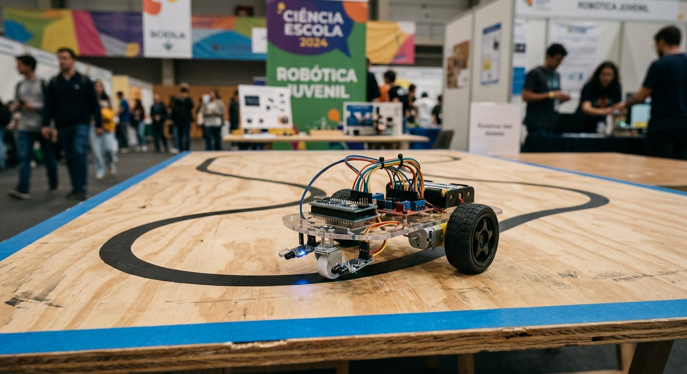

Qué cubre esta guía
Cómo funciona: reflexión de luz infrarroja
El sensor de línea infrarrojo más común, el TCRT5000, reúne en una sola pieza un LED emisor de luz infrarroja y un fototransistor receptor, colocados lado a lado apuntando hacia el suelo. El principio es simple: la luz infrarroja se emite hacia abajo y se mide cuánta rebota de vuelta.
- Sobre superficie blanca: la luz se refleja mucho y el receptor entrega una lectura alta.
- Sobre línea negra: la luz se absorbe casi por completo y la lectura baja drásticamente.
Esa diferencia entre "mucho reflejo" y "poco reflejo" es la señal que el Arduino interpreta para saber si el sensor está sobre la línea o fuera de ella. Es un sensor de proximidad por reflexión, distinto del sensor de barrera que separa emisor y receptor.
Tipos de módulos: analógico y digital
| Característica | Módulo analógico | Módulo digital |
|---|---|---|
| Salida | Valor continuo (0–1023) | Alto o bajo (0/1) |
| Pines | VCC, GND, AO | VCC, GND, DO (a veces AO también) |
| Ajuste | Por software (umbral en código) | Potenciómetro físico |
| Control proporcional | Sí | No (solo on/off) |
| Recomendado para | Siguelíneas avanzados | Proyectos simples |
Conexión al Arduino
Módulo infrarrojo Arduino Uno
----------------- -----------
VCC --> 5V
GND --> GND
AO (analógico) --> A0 (sensor izquierdo) y A1 (sensor derecho)
DO (digital, si es) --> Pin digital 2 (opcional)Cada sensor usa un pin analógico distinto. Para un siguelíneas básico con dos sensores, conecta el izquierdo a A0 y el derecho a A1. Si tu módulo solo tiene salida digital DO, conéctalo a un pin digital y calibra con el potenciómetro físico.
Calibrar el umbral de detección
La calibración es el paso que más determina el éxito del robot. Consiste en leer el sensor sobre el blanco y sobre el negro, y fijar un umbral que los separe. Usa este sketch de calibración con el monitor serie:
const int PIN_IZQ = A0;
const int PIN_DER = A1;
void setup() {
Serial.begin(9600);
}
void loop() {
int izq = analogRead(PIN_IZQ);
int der = analogRead(PIN_DER);
Serial.print("Izq: ");
Serial.print(izq);
Serial.print(" | Der: ");
Serial.println(der);
delay(200);
}- Coloca el sensor sobre el blanco y anota el valor (será alto, por ejemplo 900).
- Colócalo sobre el negro y anota el valor (será bajo, por ejemplo 300).
- Fija el umbral en el punto medio:
(900 + 300) / 2 = 600.
Lógica de seguimiento on/off con dos sensores
Con dos sensores y un umbral, la lógica básica es una máquina de estados de cuatro casos:
const int PIN_IZQ = A0;
const int PIN_DER = A1;
const int UMBRAL = 600; // ajusta con la calibracion
const int MOTOR_IZQ_VEL = 5;
const int MOTOR_DER_VEL = 6;
const int VEL_RECTO = 180;
const int VEL_GIRO = 140;
void setup() {
pinMode(MOTOR_IZQ_VEL, OUTPUT);
pinMode(MOTOR_DER_VEL, OUTPUT);
}
void loop() {
bool izqNegro = analogRead(PIN_IZQ) < UMBRAL;
bool derNegro = analogRead(PIN_DER) < UMBRAL;
if (izqNegro && derNegro) {
// ambos sobre la linea (cruce o linea gruesa): avanzar
analogWrite(MOTOR_IZQ_VEL, VEL_RECTO);
analogWrite(MOTOR_DER_VEL, VEL_RECTO);
} else if (izqNegro) {
// el izquierdo ve negro: girar a la izquierda
analogWrite(MOTOR_IZQ_VEL, 0);
analogWrite(MOTOR_DER_VEL, VEL_GIRO);
} else if (derNegro) {
// el derecho ve negro: girar a la derecha
analogWrite(MOTOR_IZQ_VEL, VEL_GIRO);
analogWrite(MOTOR_DER_VEL, 0);
} else {
// ninguno ve la linea: seguir recto buscandola
analogWrite(MOTOR_IZQ_VEL, VEL_RECTO);
analogWrite(MOTOR_DER_VEL, VEL_RECTO);
}
}Esta lógica funciona, pero produce el zigzagueo característico de los siguelíneas básicos: el robot reacciona de golpe cuando un sensor cruza la línea. La mejora natural es el control proporcional.
Mejora: control proporcional
En lugar de decidir "girar o no girar", el control proporcional calcula un error que indica cuán lejos está el robot del centro de la línea y corrige la velocidad de cada rueda en proporción a ese error:
const int PIN_IZQ = A0;
const int PIN_DER = A1;
const int MOTOR_IZQ_VEL = 5;
const int MOTOR_DER_VEL = 6;
const int VEL_BASE = 170;
const float KP = 0.35; // ganancia proporcional (ajustable)
void loop() {
int lecturaIzq = analogRead(PIN_IZQ);
int lecturaDer = analogRead(PIN_DER);
// Error: diferencia entre sensores (0 = centrado en la linea)
int error = lecturaIzq - lecturaDer;
// Correccion proporcional al error
int correccion = (int)(KP * error);
int velIzq = VEL_BASE - correccion;
int velDer = VEL_BASE + correccion;
velIzq = constrain(velIzq, -255, 255);
velDer = constrain(velDer, -255, 255);
analogWrite(MOTOR_IZQ_VEL, abs(velIzq));
analogWrite(MOTOR_DER_VEL, abs(velDer));
}El signo del error indica hacia qué lado corregir, y la ganancia KP controla la agresividad de la corrección: un valor muy alto hace oscilar al robot, uno muy bajo lo hace lento para reaccionar. El control proporcional es la base del proyecto de siguelíneas para feria científica, donde la velocidad se convierte en la variable medible del experimento.
Montaje de los sensores en el chasis
- Altura: entre 5 y 15 mm del suelo. Demasiado alto, pierde contraste; demasiado bajo, roza la pista.
- Posición: lo más adelantados posible, para que el robot reaccione antes de salirse de la línea.
- Separación: un poco mayor que el ancho de la línea, para que centrado queden ambos sobre el blanco a los lados.
- Simetría: ambos sensores a la misma altura y misma distancia del suelo; cualquier inclinación descalibra todo el sistema.
Problemas comunes y soluciones
| Síntoma | Causa probable | Solución |
|---|---|---|
| El robot no distingue blanco de negro | Altura de sensores incorrecta | Ajustar a 5–15 mm del suelo y recalibrar |
| Pierde la línea en las curvas | Velocidad alta o sensores muy atrasados | Bajar velocidad, adelantar sensores, subir KP |
| Oscila de lado a lado | Ganancia proporcional demasiado alta | Reducir el valor de KP gradualmente |
| Se sale en un tramo recto | Ruedas de distinta velocidad o chasis torcido | Verificar motores y alineación del chasis |
| Cambia el comportamiento con la luz del día | Luz ambiental no considerada en la calibración | Recalibrar en las condiciones reales de la pista |
Conclusión
El sensor infrarrojo de línea es la puerta de entrada a la robótica móvil: enseña reflexión de luz, calibración, control de motores y, con el control proporcional, un primer acercamiento a los algoritmos de control que usan los robots de competencia. Domina la calibración y el montaje, y luego sube el nivel con el proyecto de feria científica con variable medible o el sensor PIR de movimiento para agregar detección de personas a tus proyectos.
Preguntas frecuentes
¿Cómo detecta un sensor infrarrojo una línea negra sobre fondo blanco?
El sensor infrarrojo (típicamente un TCRT5000) tiene un LED emisor de luz infrarroja y un fototransistor receptor lado a lado. La luz infrarroja se emite hacia el suelo: sobre una superficie blanca, la luz se refleja mucho y el receptor entrega una lectura alta; sobre una línea negra, la luz se absorbe y la lectura baja. Esa diferencia entre la reflexión del blanco y del negro es lo que el Arduino usa para saber si el sensor está sobre la línea o fuera de ella, y por eso el robot puede seguir una línea negra dibujada sobre fondo blanco.
¿Qué diferencia hay entre un sensor de línea analógico y uno digital?
El sensor analógico entrega un valor continuo (por ejemplo, de 0 a 1023 con analogRead) proporcional a la cantidad de luz reflejada, lo que permite medir grises intermedios y aplicar control proporcional. El sensor digital incluye un comparador con un potenciómetro de ajuste, y entrega solo alto o bajo: se gira el potenciómetro hasta que el módulo distinga blanco de negro, y el Arduino lee con digitalRead. El analógico es más flexible y es el que se recomienda para robots con control proporcional; el digital es más simple pero solo sirve para lógica on/off.
¿Cómo calibro el umbral de detección de mis sensores de línea?
La calibración consiste en leer el sensor sobre la superficie blanca y sobre la línea negra, y elegir un umbral que separe ambos casos. El procedimiento: con el sensor a la altura de trabajo, registra el valor analógico sobre blanco (que será alto) y sobre negro (que será bajo), y fija el umbral como el punto medio entre ambos, por ejemplo, umbral = (lecturaBlanco + lecturaNegro) / 2. Es importante calibrar con la misma altura, iluminación y pista que se usarán en la prueba real, porque la luz ambiental altera las lecturas.
¿Qué es el control proporcional en un siguelíneas?
El control proporcional es una mejora de la lógica on/off que calcula un "error" que indica cuán lejos está el robot del centro de la línea, y corrige la velocidad de cada rueda en proporción a ese error. Si el error es pequeño, la corrección es suave; si el error es grande, la corrección es más fuerte. El resultado es un movimiento fluido que serpentea menos y toma las curvas con más rapidez, en lugar del zigzagueo brusco del enfoque todo o nada. Es el primer paso hacia el control PID que usan los robots de competencia.
¿A qué altura y distancia debo montar los sensores del chasis?
Los sensores infrarrojos funcionan mejor montados a una distancia corta y estable del suelo, típicamente entre 5 y 15 milímetros. Demasiado alto, el sensor pierde la diferencia entre blanco y negro; demasiado bajo, roza con las irregularidades de la pista. Los dos sensores deben ir lo más adelantados posible y separados un poco más que el ancho de la línea, para que cuando el robot esté centrado ambos queden sobre el blanco a los lados de la línea. Una altura fija y simétrica entre ambos sensores es clave para que la calibración siga siendo válida.
Este artículo es contenido editorial independiente: no contiene ubicaciones patrocinadas ni enlaces de afiliado. Si en futuras actualizaciones se agregan enlaces a proveedores de componentes, serán identificados explícitamente. El código y las conexiones son referenciales y deben adaptarse y probarse con tu propio hardware. Si detectas un error en esta guía, por favor avísanos.
Sigue aprendiendo
Convierte este sensor en un proyecto de feria con el siguelíneas de variable medible, o explora el Sensor PIR de Movimiento para detección de personas.
Fuentes primarias y lecturas recomendadas
Referencias que sustentan los conceptos generales de la guía. Los valores exactos pueden variar según el fabricante.
- Arduino Reference — analogRead()
- Arduino Reference — constrain()
- All About Circuits — Referencia técnica de electrónica básica
Enlaces revisados: 13 de agosto de 2026.